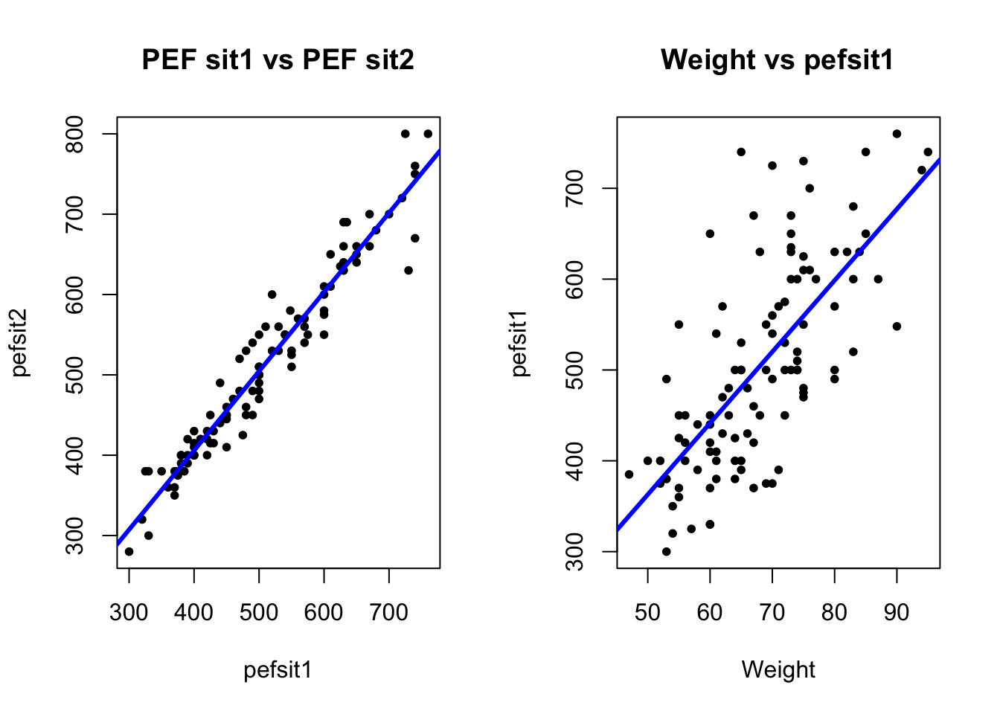
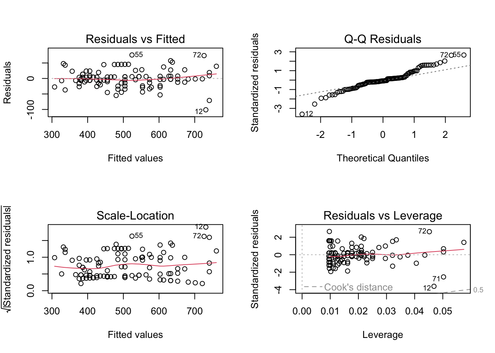
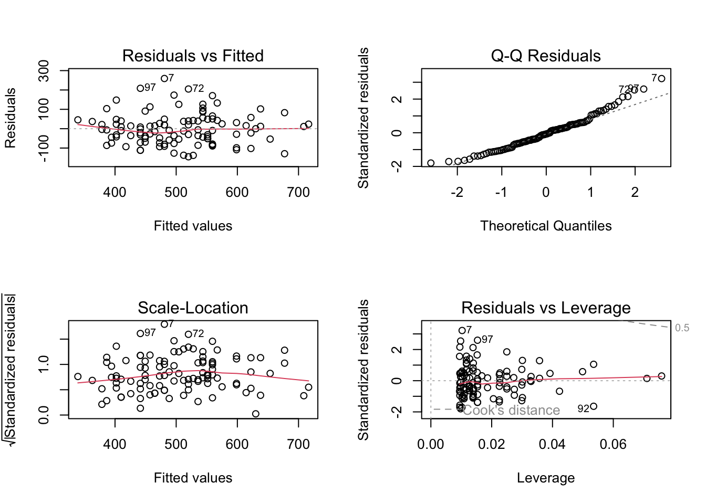
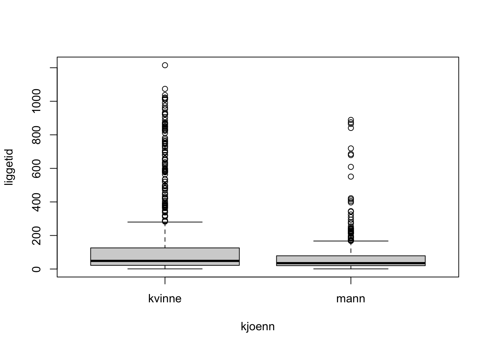
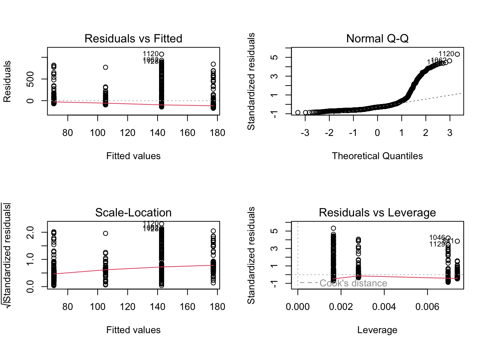
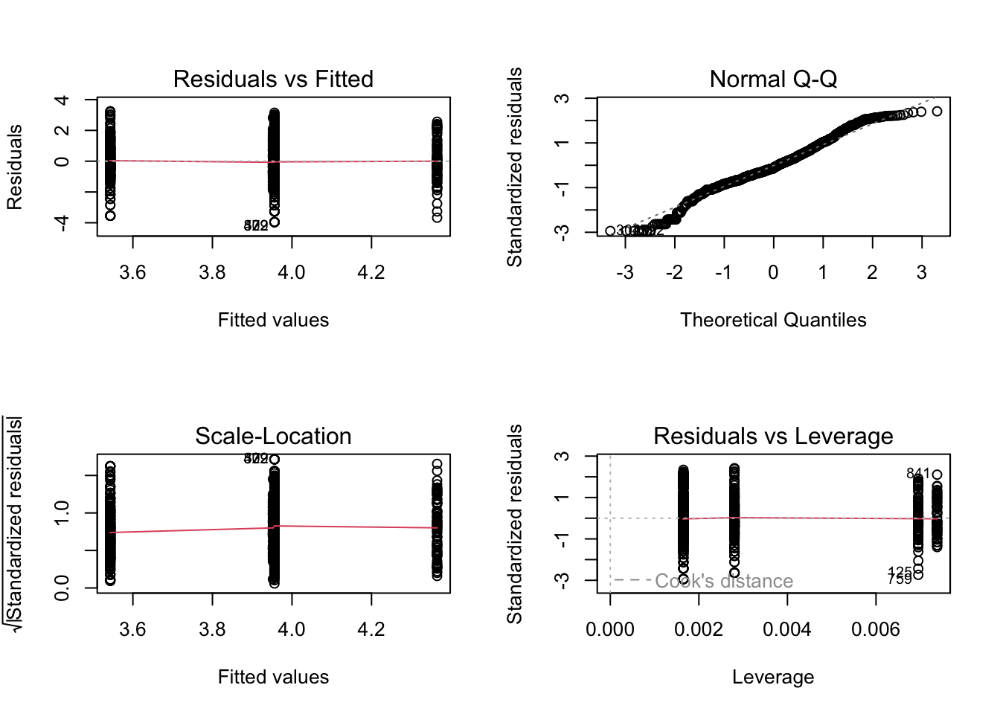

# load data
bp <- read.csv('data/bp.csv')
head(bp) Age bloodpressure
1 20 120
2 43 128
3 63 141
4 26 126
5 53 134
6 31 128Datasets
bp (rda link, csv link)PEFH98-english (rda link, csv link)liggetid (rda link, csv link)The dataset bp contains data on 20 healthy adults on two variables, Age and Blood pressure. We will explore the relationship between these two variables.
Load the dataset. Find the correlation between age and blood pressure, and test if it is significant. Compute a 95% confidence interval for the regresion parameter.
Also find the squared correlation coefficient between age and blood pressure. What does it mean?
# load data
bp <- read.csv('data/bp.csv')
head(bp) Age bloodpressure
1 20 120
2 43 128
3 63 141
4 26 126
5 53 134
6 31 128# correlation age vs bp
cor(bp$Age, bp$bloodpressure)[1] 0.966699# or,
cor(bp) Age bloodpressure
Age 1.000000 0.966699
bloodpressure 0.966699 1.000000# 95% CI, p-value
cor.test(bp$Age, bp$bloodpressure)
Pearson's product-moment correlation
data: bp$Age and bp$bloodpressure
t = 16.026, df = 18, p-value = 4.239e-12
alternative hypothesis: true correlation is not equal to 0
95 percent confidence interval:
0.9160501 0.9869976
sample estimates:
cor
0.966699 What is the blood pressure for a person at age 40? For a person at age 75? Comment.
# fit a linear regression model
model_age_bp <- lm(bloodpressure ~ Age, data = bp)
summary(model_age_bp)
Call:
lm(formula = bloodpressure ~ Age, data = bp)
Residuals:
Min 1Q Median 3Q Max
-4.7908 -1.2777 0.1688 1.8725 2.7816
Coefficients:
Estimate Std. Error t value Pr(>|t|)
(Intercept) 112.31666 1.28744 87.24 < 2e-16 ***
Age 0.44509 0.02777 16.03 4.24e-12 ***
---
Signif. codes: 0 '***' 0.001 '**' 0.01 '*' 0.05 '.' 0.1 ' ' 1
Residual standard error: 2.12 on 18 degrees of freedom
Multiple R-squared: 0.9345, Adjusted R-squared: 0.9309
F-statistic: 256.8 on 1 and 18 DF, p-value: 4.239e-12# to predict (insert x), you need to put data in a data frame
predict(model_age_bp,
newdata = data.frame(Age = c(40, 75)),
interval = 'prediction') fit lwr upr
1 130.1202 125.5531 134.6873
2 145.6983 140.7698 150.6268Can also visualize the relationship.
plot(x = bp$Age, y = bp$bloodpressure,
main = 'Age versus Blood Pressure',
xlab = 'Age', ylab = 'Blood pressure',
pch = 20,
xlim = c(15, 80))
# add the regression line on top
abline(lm(bloodpressure ~ Age, data = bp),
col = 'blue', lwd = 3)
Lung function has been measured on 106 medical students. Peak expiratory flow rate (PEF, measured in liters per minute) was measured three times in a sittinng position, and three times in a standing position.
The variables are
Make a scatter plot of pefsit2 versus pefsit1; and make a separate scatter plot of pefsit1 versus weight. Insert a regression line on top of the scatterplots.
lung_data <- read.csv('data/PEFH98-english.csv')
# head(lung_data)
# assign variables (not strictly necessary)
pefsit1 <- lung_data$pefsit1
pefsit2 <- lung_data$pefsit2
weight <- lung_data$weight
par(mfrow = c(1, 2)) # make plots in 1 row 2 col
# scatter plot: pefsit2 vs pefsit1
plot(x = pefsit1, y = pefsit2,
main = 'PEF sit1 vs PEF sit2',
xlab = 'pefsit1', ylab = 'pefsit2',
pch = 20)
abline(lm(pefsit2 ~ pefsit1, data = lung_data),
col = 'blue', lwd = 3)
# scatter plot: pefsit1 vs weight
plot(x = weight, y = pefsit1,
main = 'Weight vs pefsit1',
xlab = 'Weight', ylab = 'pefsit1',
pch = 20)
abline(lm(pefsit1 ~ weight, data = lung_data),
col = 'blue', lwd = 3)
Compute the correlation between pefsit1 and pefsit2; and between pefsit1 and weight.
Why is the correlation between the first pair closer to 1 than the second pair?
(You can get the pair-wise correlation between many other pairs of variables using cor(your_data)).
cor(pefsit2, pefsit1) # need to remove NA here[1] NAwhich(is.na(pefsit1)) # no missinginteger(0)which(is.na(pefsit2)) # 66th missing[1] 66# option 1: cor() removes NA for you
# specify use complete observations
cor(pefsit2, pefsit1, use = 'complete.obs')[1] 0.9693111# option 2: you process (remove) the row of missing
# from both variables (remove element 66)
pefsit2_narm <- pefsit2[!is.na(pefsit2)]
pefsit1_narm <- pefsit1[!is.na(pefsit2)]
# use pefsit2_narm instead of pefsit2 to compute cor
# should be the same
cor(pefsit2_narm, pefsit1_narm)[1] 0.9693111For pefsit1 and weight it is straightforward, as there is not missing data.
# pefsit1, weight
cor(pefsit1, weight)[1] 0.7055166To compute the correlation between multiple pairs, you need to select a few variables first.
# pairwise for multiple pairs
# use age, height, weight, pefsit1, pefsit2, pefsit3, pefmean
# select a smaller dataset
lungdata2 <- lung_data[, c('age', 'height', 'weight', 'pefsit1',
'pefsit2', 'pefsit3', 'pefmean')]
head(lungdata2, 3) age height weight pefsit1 pefsit2 pefsit3 pefmean
1 20 165 50 400 400 410 405.0000
2 20 185 75 480 460 510 491.6667
3 21 178 70 490 540 560 505.0000# produce correlation matrix for all the variables here
# round(1.2345, digits = 2) gives 1.23
round(cor(lungdata2, use = 'complete.obs'), digits = 2) age height weight pefsit1 pefsit2 pefsit3 pefmean
age 1.00 -0.15 -0.18 -0.02 -0.02 -0.01 -0.03
height -0.15 1.00 0.83 0.68 0.68 0.67 0.69
weight -0.18 0.83 1.00 0.71 0.70 0.67 0.70
pefsit1 -0.02 0.68 0.71 1.00 0.97 0.96 0.98
pefsit2 -0.02 0.68 0.70 0.97 1.00 0.98 0.99
pefsit3 -0.01 0.67 0.67 0.96 0.98 1.00 0.98
pefmean -0.03 0.69 0.70 0.98 0.99 0.98 1.00Carry out two regression analysis:
pefsit2 as dependent variable, pefsit1 as independent variable;pefsit1 as dependent variable, weight as independent variable.Interpret the results in relation to the scatter plots.
# pef2 vs pef 1
lm_pef2_pef1 <- lm(pefsit2 ~ pefsit1, data = lung_data)
summary(lm_pef2_pef1)
Call:
lm(formula = pefsit2 ~ pefsit1, data = lung_data)
Residuals:
Min 1Q Median 3Q Max
-101.136 -13.458 -2.588 9.009 75.816
Coefficients:
Estimate Std. Error t value Pr(>|t|)
(Intercept) 11.73107 12.75039 0.92 0.36
pefsit1 0.98549 0.02463 40.02 <2e-16 ***
---
Signif. codes: 0 '***' 0.001 '**' 0.01 '*' 0.05 '.' 0.1 ' ' 1
Residual standard error: 28.66 on 103 degrees of freedom
(1 observation deleted due to missingness)
Multiple R-squared: 0.9396, Adjusted R-squared: 0.939
F-statistic: 1601 on 1 and 103 DF, p-value: < 2.2e-16# pef1 vs weight
lm_pef1_weight <- lm(pefsit1 ~ weight, data = lung_data)
summary(lm_pef1_weight)
Call:
lm(formula = pefsit1 ~ weight, data = lung_data)
Residuals:
Min 1Q Median 3Q Max
-145.025 -53.081 -6.085 41.587 259.269
Coefficients:
Estimate Std. Error t value Pr(>|t|)
(Intercept) -30.0819 53.2502 -0.565 0.573
weight 7.8587 0.7741 10.152 <2e-16 ***
---
Signif. codes: 0 '***' 0.001 '**' 0.01 '*' 0.05 '.' 0.1 ' ' 1
Residual standard error: 80.96 on 104 degrees of freedom
Multiple R-squared: 0.4978, Adjusted R-squared: 0.4929
F-statistic: 103.1 on 1 and 104 DF, p-value: < 2.2e-16Make residual analysis for the analyses you did before. Interpret the results.
par(mfrow = c(2, 2)) # plot 2 by 2
plot(lm_pef2_pef1)
plot(lm_pef1_weight)
Make a regression analysis with pefsit1 as dependent variable, and sex and weight as independent variables. Assess the model fit. Interpret the results.
# pefsit1 vs (weight, gender)
# note that we converted gender into categorical
lm_pef1_weight_gender <- lm(pefsit1 ~ weight + gender,
data = lung_data)
# lm_pef1_weight_gender
summary(lm_pef1_weight_gender)
Call:
lm(formula = pefsit1 ~ weight + gender, data = lung_data)
Residuals:
Min 1Q Median 3Q Max
-132.141 -46.988 -0.877 45.971 180.290
Coefficients:
Estimate Std. Error t value Pr(>|t|)
(Intercept) 224.143 60.453 3.708 0.000339 ***
weight 3.204 0.985 3.253 0.001544 **
gendermale 127.280 20.017 6.359 5.67e-09 ***
---
Signif. codes: 0 '***' 0.001 '**' 0.01 '*' 0.05 '.' 0.1 ' ' 1
Residual standard error: 68.94 on 103 degrees of freedom
Multiple R-squared: 0.6393, Adjusted R-squared: 0.6323
F-statistic: 91.29 on 2 and 103 DF, p-value: < 2.2e-16Make a regression analysis with pefmean as dependent variable, and try out combinations of sex, height, weight as independent variables.
Which variables would you include in your final analysis? How much variation is explained? Assess the model fit, and interpret the results.
# we can try two sets
# 1. height weight gender
lm_pefm_height_weight_gen <- lm(pefmean ~ height + weight + gender,
data = lung_data)
summary(lm_pefm_height_weight_gen)
Call:
lm(formula = pefmean ~ height + weight + gender, data = lung_data)
Residuals:
Min 1Q Median 3Q Max
-178.443 -42.347 -4.134 50.155 172.662
Coefficients:
Estimate Std. Error t value Pr(>|t|)
(Intercept) -68.931 225.291 -0.306 0.760
height 2.213 1.571 1.409 0.162
weight 1.956 1.301 1.504 0.136
gendermale 122.597 21.555 5.688 1.26e-07 ***
---
Signif. codes: 0 '***' 0.001 '**' 0.01 '*' 0.05 '.' 0.1 ' ' 1
Residual standard error: 70.37 on 101 degrees of freedom
(1 observation deleted due to missingness)
Multiple R-squared: 0.6423, Adjusted R-squared: 0.6317
F-statistic: 60.46 on 3 and 101 DF, p-value: < 2.2e-16# 2. weight gender
lm_pefm_weight_gen <- lm(pefmean ~ weight + gender,
data = lung_data)
summary(lm_pefm_weight_gen)
Call:
lm(formula = pefmean ~ weight + gender, data = lung_data)
Residuals:
Min 1Q Median 3Q Max
-172.872 -41.467 0.706 46.601 168.533
Coefficients:
Estimate Std. Error t value Pr(>|t|)
(Intercept) 236.214 62.242 3.795 0.000251 ***
weight 3.114 1.013 3.076 0.002697 **
gendermale 132.260 20.533 6.441 3.95e-09 ***
---
Signif. codes: 0 '***' 0.001 '**' 0.01 '*' 0.05 '.' 0.1 ' ' 1
Residual standard error: 70.71 on 102 degrees of freedom
(1 observation deleted due to missingness)
Multiple R-squared: 0.6353, Adjusted R-squared: 0.6281
F-statistic: 88.84 on 2 and 102 DF, p-value: < 2.2e-16The data was collected at the Geriatric Department at Ullevål Sykehus. Below is a description of the data set liggetid. The file includes the following variables:
The variable liggetid time is calculated from the innaar, innmaan, inndag, utaar, utmaan and utdag variables.
Create a box plot for length of hospital stay for men and women.
liggetid <- read.csv('data/liggetid.csv')
head(liggetid, 3) faar fmaan fdag innaar innmaan inndag utaar utmaan utdag kjoenn kom_fra slag
1 1906 3 4 1987 3 5 87 3 18 kvinne 1 0
2 1891 4 3 1987 3 6 87 3 23 kvinne 1 0
3 1908 9 6 1987 3 10 87 3 16 kvinne 1 0
alder liggetid lnliggti kom_fra2 kom_fra3 kom_fra4 kom_fra5 kom_fra6 status
1 81 13 2.564949 0 0 0 0 0 1
2 96 17 2.833213 0 0 0 0 0 1
3 79 6 1.791759 0 0 0 0 0 1# boxplot
boxplot(liggetid ~ kjoenn, data = liggetid)
We want to explain the variation in lengths of hospital stay. We will look at the independent variables kjoenn (gender) and slag (stroke).
Run a regression analysis using the dependent variable liggetid. Also perform a residual analysis. What do you think about this analysis?
# response (dep): liggetid
# predictor (indep): kjoenn, slag
lm_ligge <- lm(liggetid ~ slag + kjoenn,
data = liggetid)
summary(lm_ligge)
Call:
lm(formula = liggetid ~ slag + kjoenn, data = liggetid)
Residuals:
Min 1Q Median 3Q Max
-175.3 -111.7 -59.7 1.3 1072.3
Coefficients:
Estimate Std. Error t value Pr(>|t|)
(Intercept) 142.702 8.174 17.457 < 2e-16 ***
slag 34.557 17.194 2.010 0.0447 *
kjoennmann -72.002 12.865 -5.597 2.79e-08 ***
---
Signif. codes: 0 '***' 0.001 '**' 0.01 '*' 0.05 '.' 0.1 ' ' 1
Residual standard error: 201.4 on 1050 degrees of freedom
(86 observations deleted due to missingness)
Multiple R-squared: 0.03137, Adjusted R-squared: 0.02953
F-statistic: 17 on 2 and 1050 DF, p-value: 5.398e-08# visualize the residual
par(mfrow = c(2, 2))
plot(lm_ligge)
Do the same analysis, but on the log-transformed data. The transformed variable already exists in the dataset, lnliggti. Comment on the results.
# response (dep): log transformed (lnliggti)
# predictor (indep): kjoenn, slag
lm_logligge <- lm(lnliggti ~ slag + kjoenn,
data = liggetid)
summary(lm_logligge)
Call:
lm(formula = lnliggti ~ slag + kjoenn, data = liggetid)
Residuals:
Min 1Q Median 3Q Max
-3.9560 -0.8650 -0.1474 0.8281 3.2469
Coefficients:
Estimate Std. Error t value Pr(>|t|)
(Intercept) 3.95601 0.05470 72.327 < 2e-16 ***
slag 0.40896 0.11496 3.557 0.000391 ***
kjoennmann -0.41282 0.08604 -4.798 1.83e-06 ***
---
Signif. codes: 0 '***' 0.001 '**' 0.01 '*' 0.05 '.' 0.1 ' ' 1
Residual standard error: 1.346 on 1049 degrees of freedom
(87 observations deleted due to missingness)
Multiple R-squared: 0.03099, Adjusted R-squared: 0.02915
F-statistic: 16.78 on 2 and 1049 DF, p-value: 6.733e-08par(mfrow = c(2, 2))
plot(lm_logligge)